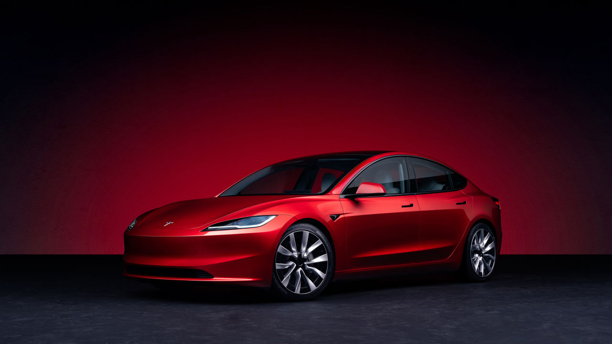

Most Popular ECars
Most Powerful ECars List

Tesla model 3 is an electric five-seat sedan manufactured by Tesla. The model was unveiled on March 31, 2016. The Tesla Model 3 is based on a new platform, different from the one used in the Tesla Model S and Tesla Model X. The car was initially produced in Fremont, California, with batteries and electric motors supplied by Gigafactory 1. The car was later also produced in Shanghai.
Tesla Roadster is a sports electric car, the first car of the American company Tesla. It was produced in 2008-2012, about 2600 cars were assembled. The price of the car is about 110 thousand dollars. The official presentation took place on July 19, 2006 in Santa Monica, California. Tesla Roadster can accelerate to 100 km/h in less than 4 seconds. The maximum speed is forcibly limited to 201.1 km/h. The charge of lithium-ion (Li-ion) batteries is enough for 300-400 km. A full charge of the batteries takes 3.5 hours. The cost of the base model is 109,000 dollars.
The Tesla Cybertruck is a cyberpunk-style (industrial aesthetic) electric pickup truck manufactured by Tesla. The stated payload capacity is about 1.6 tons. Depending on the model, the pickup truck should travel up to 500 miles (about 804 km) on a single charge. Production of the all-wheel drive dual-motor and tri-motor versions of the Cybertruck was planned to begin in late 2021, and the rear-wheel drive single-motor model - in late 2022, but production was postponed to 2022, and then to early 2023. In January 2022, all references to the start of production of the car in 2022 on the Tesla website were removed. Production of the car began in July 2023, and the first deliveries began in November of the same year.